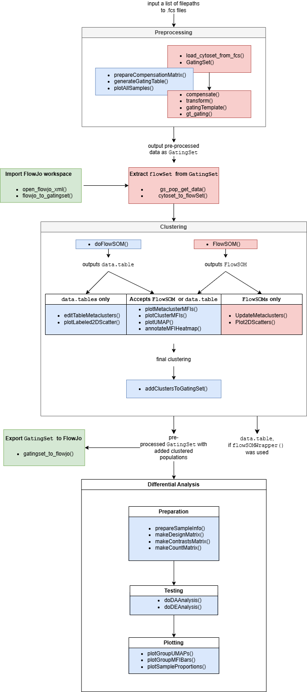

flowFun
flowFun.RmdTo improve the accessibility of the package, flowFun
provides a number of template scripts for users to make getting started
less daunting. When viewing the GitHub page, these may be found in the
\scripts folder. Vignettes giving more detailed
walkthroughs of a typical analysis may also be found by clicking the
‘Articles’ tab above. On this page, we will give a brief overview of the
package, and recommend how users can best use its documentation to
inform their analyses.
Data types
There are four data types crucial to this pipeline that users should familiarize themselves with. The following table summarizes them:
| Data Type | Description |
|---|---|
| flowFrame | A class belonging to the flowCore package. It stores the data contained in a single FCS file, including annotations and raw measurement values. |
| flowSet | A class belonging to the flowCore package. A list of named flowFrames. |
| GatingHierarchy | A class belonging to the flowWorkspace package. Analogous to the flowFrame, with two key differences: it holds the corresponding gating scheme in addition to the raw data, and is more space efficient. |
| GatingSet | A class belonging to the flowWorkspace package. Analogous to the flowSet. Holds a set of GatingHierarchies. |
Essentially, a flowFrame is a representation of an FCS
file in R, the same way a data.frame is a representation of
a CSV file in R. A GatingHierarchy stores the same
information as a flowFrame, plus the gating scheme for that
sample.
About the GatingSet
For this pipeline, the most important of these data types is the
GatingSet, which holds a set of
GatingHierarchies. Users who have performed flow analysis
in R before may already be familiar with the flowSet, which
is quite similar. However, GatingSets are more advantageous
for a few reasons. For one, as mentioned above, in addition to the raw
data GatingSets can hold information about any gates
applied during analysis. Instead of having multiple sets of FCS files
corresponding to raw data, preprocessed data, various subsets, etc.,
this data structure conveniently keeps everything in one place.
Additionally, GatingSets are far more memory efficient
than flowSets. Rather than always having the full dataset
loaded in memory, a GatingSet contains only a pointer to
the data, which is stored compactly in C data structure. This makes
performing operations on large datasets faster. Users who want to learn
more should see the flowWorkspace documentation, which
contains multiple helpful vignettes giving a more detailed explanation
of GatingSets.
Overview
flowFun implements an end-to-end pipeline for cytometry
analysis, including data import, pre-processing, cell type
identification, differential analysis, data visualization, and data
export. Notably, flowFun was designed to allow users to
easily import and export data at any stage of the analysis.
For example, if a user has a dataset which has already been pre-processed, they may import their data and skip to cell type identification. Similarly, they may use this pipeline only for pre-processing, then export the results to use in another program. This feature is advantageous for users who have access to and more familiarity with certain cytometry analysis software like FlowJo or Diva. More details will be given later.
Workflow diagram
The diagram below summarizes the workflow of a typical analysis, and
the functions relevant to each step. Blue boxes contain functions native
to flowFun, and red boxes contain necessary functions
native to other packages. Green boxes contain optional functions for
importing or exporting data in-between steps.

Data import
flowSets
The chunk below gives an example of how a set of FCS files can be
read into R as a flowSet. A flowSet can be
subset with double brackets [[, so fs[[1]]
gives the first flowFrame in the set, fs[[2]]
gives the second flowFrame in the set, etc. This is done
below to print the first element of the flowSet we read
in.
library(flowCore)
# Specify path to .fcs file
dir <- system.file("extdata", "samples", package = "flowFunData")
# Read in as flowSet
fs <- read.flowSet(path = dir, pattern = "\\.fcs", truncate_max_range = TRUE)
# Print summary of first flowFrame/sample
fs[[1]]
#> flowFrame object 'sample_1.fcs'
#> with 5000 cells and 35 observables:
#> name desc range minRange maxRange
#> $P1 FSC-A NA 262144 0 262144
#> $P2 FSC-H NA 262144 0 262144
#> $P3 FSC-W NA 262144 0 262144
#> $P4 SSC-A NA 262144 0 262144
#> $P5 SSC-H NA 262144 0 262144
#> ... ... ... ... ... ...
#> $P31 PE-CF594-A IgD 262144 -111 262144
#> $P32 PE-Cy5-A CD25 262144 -111 262144
#> $P33 PE-Cy5.5-A NA 262144 -111 262144
#> $P34 PE-Cy7-A Fas 262144 -111 262144
#> $P35 Time NA 262144 0 262144
#> 469 keywords are stored in the 'description' slotWe see a summary of the first sample; its filename is “sample_1.fcs”,
it contains 5000 cells, and data for 35 parameters. To get a table of
the actual expression data, we use the function exprs()
from the flowCore package.
# Get expression matrix for first sample
ff_expr <- exprs(fs[[1]])
# Print first 4 rows
ff_expr[1:4, ]
#> FSC-A FSC-H FSC-W SSC-A SSC-H SSC-W FITC-A
#> [1,] 172421.77 159635.250 141903.8 43938.047 40146.55 91053.63 4798.914
#> [2,] 130561.10 108919.961 143228.1 152532.750 122979.55 111328.62 12137.295
#> [3,] 59750.52 52227.129 124318.2 34754.867 32083.29 86860.19 1849.123
#> [4,] 7355.91 7259.885 77052.2 7285.214 7117.29 63835.60 1019.070
#> BB630-A BB660-P-A BB700-P-A BB790-P-A APC-A Alexa Fluor 700-A
#> [1,] 786.2920 452.64316 397.99857 1318.6589 20.11475 128.2221
#> [2,] 3522.0049 2404.10498 5396.73242 7419.7061 11051.69922 32283.5469
#> [3,] 493.7941 305.93362 913.11847 5790.0962 83.77976 2193.0068
#> [4,] 194.5944 15.99989 45.98434 477.9663 -41.39278 110.5113
#> APC-Cy7-A BV421-A BV480-A BV570-A BV605-A BV650-A
#> [1,] 605.0908 91.80707 185.2335 120.617897 66.70843 87.03339
#> [2,] 8314.0439 4905.69727 52768.1562 10745.570312 18197.67188 34821.87109
#> [3,] 12747.9346 1770.47498 461.8841 226.722931 221.99844 230.76936
#> [4,] 418.3218 -59.16986 -145.9443 -7.981329 58.99016 -44.28738
#> BV711-A BV750-P-A BV786-A BUV395-A BUV496-A BUV563-A
#> [1,] 266.3862 124.24052 264.8026 72.70756 383.005554 209.00862
#> [2,] 37474.3906 18857.96289 20743.8301 5667.64209 7551.632324 4003.01172
#> [3,] 1878.3730 22423.04883 40234.0000 149.08226 316.002411 261.43042
#> [4,] 159.9085 -0.84014 533.7647 20.97909 9.185216 63.60031
#> BUV615-P-A BUV661-A BUV737-A BUV805-A PE-A PE-CF594-A
#> [1,] 144.0625458 112.85854 262.50281 935.4973 69.18753 51.06232
#> [2,] 5124.7939453 10772.74805 34518.89453 28976.0605 7547.36328 7097.62354
#> [3,] 150.9850464 179.67509 11367.02051 19290.5312 1297.53540 316.13800
#> [4,] 0.7703382 49.72784 26.84687 328.1612 52.24570 -42.42495
#> PE-Cy5-A PE-Cy5.5-A PE-Cy7-A Time
#> [1,] 163.59433 9.276711 4148.093 8742.340
#> [2,] 11920.41406 2834.209229 14326.565 5863.763
#> [3,] 253.09689 165.409515 12095.505 8203.134
#> [4,] -22.67742 -165.246353 980.696 1575.163We can also view information about the experiment’s panel using the
functions pData() and parameters() together.
The name column lists channels, and desc lists
the associated marker, if any.
# View marker/channel pairs and value ranges
pData(parameters(fs[[1]]))
#> name desc range minRange maxRange
#> $P1 FSC-A <NA> 262144 0.00000 262144
#> $P2 FSC-H <NA> 262144 0.00000 262144
#> $P3 FSC-W <NA> 262144 0.00000 262144
#> $P4 SSC-A <NA> 262144 0.00000 262144
#> $P5 SSC-H <NA> 262144 0.00000 262144
#> $P6 SSC-W <NA> 262144 0.00000 262144
#> $P7 FITC-A PHA-L 262144 -111.00000 262144
#> $P8 BB630-A <NA> 262144 -71.32294 262144
#> $P9 BB660-P-A <NA> 262144 -111.00000 262144
#> $P10 BB700-P-A CD123 262144 -111.00000 262144
#> $P11 BB790-P-A <NA> 262144 -111.00000 262144
#> $P12 APC-A CD16 262144 -111.00000 262144
#> $P13 Alexa Fluor 700-A CD8 262144 -111.00000 262144
#> $P14 APC-Cy7-A CD3 262144 -111.00000 262144
#> $P15 BV421-A IL10R 262144 -111.00000 262144
#> $P16 BV480-A HLA-DR 262144 -111.00000 262144
#> $P17 BV570-A <NA> 262144 -111.00000 262144
#> $P18 BV605-A CD14 262144 -111.00000 262144
#> $P19 BV650-A CD11c 262144 -111.00000 262144
#> $P20 BV711-A TIM3 262144 -111.00000 262144
#> $P21 BV750-P-A CCR7 262144 -111.00000 262144
#> $P22 BV786-A CD38 262144 -111.00000 262144
#> $P23 BUV395-A CD45RA 262144 -111.00000 262144
#> $P24 BUV496-A LD 262144 -111.00000 262144
#> $P25 BUV563-A TCRgd 262144 -106.69566 262144
#> $P26 BUV615-P-A CD56 262144 -111.00000 262144
#> $P27 BUV661-A CD19 262144 -111.00000 262144
#> $P28 BUV737-A CD39 262144 -111.00000 262144
#> $P29 BUV805-A CD4 262144 -111.00000 262144
#> $P30 PE-A PD1 262144 -111.00000 262144
#> $P31 PE-CF594-A IgD 262144 -111.00000 262144
#> $P32 PE-Cy5-A CD25 262144 -111.00000 262144
#> $P33 PE-Cy5.5-A <NA> 262144 -111.00000 262144
#> $P34 PE-Cy7-A Fas 262144 -111.00000 262144
#> $P35 Time <NA> 262144 0.00000 262144The function colnames() may also be used to quickly view
the channel names of a flowSet.
# Get channel names
colnames(fs)
#> [1] "FSC-A" "FSC-H" "FSC-W"
#> [4] "SSC-A" "SSC-H" "SSC-W"
#> [7] "FITC-A" "BB630-A" "BB660-P-A"
#> [10] "BB700-P-A" "BB790-P-A" "APC-A"
#> [13] "Alexa Fluor 700-A" "APC-Cy7-A" "BV421-A"
#> [16] "BV480-A" "BV570-A" "BV605-A"
#> [19] "BV650-A" "BV711-A" "BV750-P-A"
#> [22] "BV786-A" "BUV395-A" "BUV496-A"
#> [25] "BUV563-A" "BUV615-P-A" "BUV661-A"
#> [28] "BUV737-A" "BUV805-A" "PE-A"
#> [31] "PE-CF594-A" "PE-Cy5-A" "PE-Cy5.5-A"
#> [34] "PE-Cy7-A" "Time"Finally, to view all filenames for the samples in a
flowSet, use sampleNames().
# Get sample names
sampleNames(fs)
#> [1] "sample_1.fcs" "sample_2.fcs" "sample_3.fcs" "sample_4.fcs" "sample_5.fcs"
#> [6] "sample_6.fcs"GatingSets
Interacting with a GatingSet is quite similar to the
examples above. The flowWorkspace has a thorough vignette
on this topic that may be brought up by typing
vignette(package = "flowWorkspace", "flowWorkspace-Introduction")
into the RStudio console, assuming the package has been installed and
loaded. Here we will summarize the details essential to this pipeline,
but if users feel in need of further clarification this vignette is
highly recommended.
Create from FCS files
There are multiple ways to create a GatingSet. The first
is to generate one from a set of FCS files, like what was done for the
flowSet above. The chunk below gives an example of how a
set of FCS files may be read into a GatingSet.
library(flowWorkspace)
# Specify path to .fcs file
dir <- system.file("extdata", "samples", package = "flowFunData")
# Load cytoset from .fcs files
cs <- load_cytoset_from_fcs(path = dir, pattern = "\\.fcs", truncate_max_range = TRUE)
# Make GatingSet
gs <- GatingSet(cs)
# Print summary of first GatingHierachy in set
gs[[1]]
#> Sample: sample_1.fcs
#> GatingHierarchy with 1 gatesInstead of a call to read.flowSet(), we use
load_cytoset_from_fcs(), then GatingSet().
Note that gs[[1]] prints different results than
fs[[1]]; more on that later.
Import from FlowJo workspace
With the help of the package CytoML, it is also possible
to import a FlowJo workspace directly into R as a
GatingSet. This package is not essential to
flowFun and thus is not installed as a dependency. Users
interested in this functionality must install it separately as
follows:
# Use devtools package to install from GitHub
library(devtools)
install_github("RGLab/openCyto")
# If this fails, try running:
BiocManager::install("openCyto")
# then try againThe package’s GitHub repository may also be viewed here.
Once CytoML has been installed, importing a workspace is
straightforward. Two things are required: a WSP file exported from
FlowJo, and the filepath to the set of corresponding FCS files. The
function open_flowjo_xml() opens the WSP file in R (despite
the function name, it accepts a WSP file just fine), and
flowjo_to_gatingset() generates the
GatingSet.
library(CytoML)
# Get path to .wsp file
flowjo_file <- "path/to/flowjo.wsp"
# Import file
ws <- open_flowjo_xml(flowjo_file)
# Make GatingSet from FlowJo workspace
gs <- flowjo_to_gatingset(ws, path = "path/to/fcs_files")